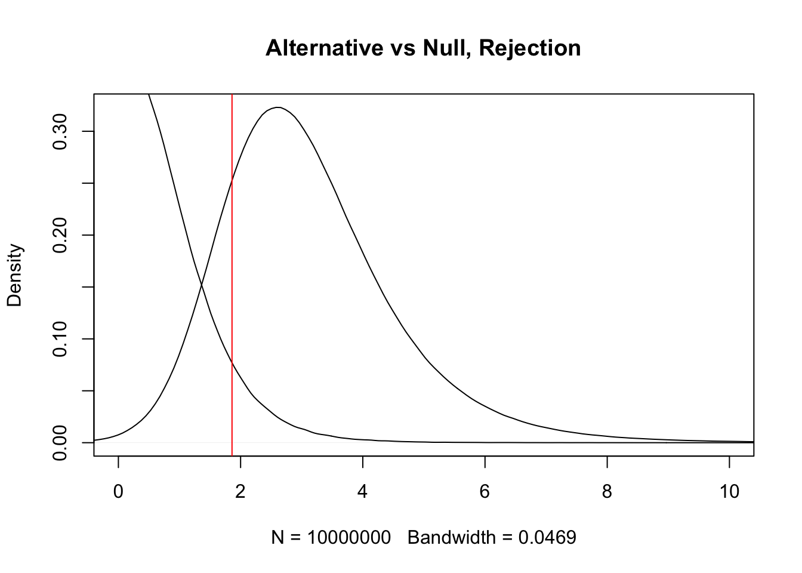

Last updated: 2020-08-23
Checks: 7 0
Knit directory: nejm/
This reproducible R Markdown analysis was created with workflowr (version 1.6.2). The Checks tab describes the reproducibility checks that were applied when the results were created. The Past versions tab lists the development history.
Great! Since the R Markdown file has been committed to the Git repository, you know the exact version of the code that produced these results.
Great job! The global environment was empty. Objects defined in the global environment can affect the analysis in your R Markdown file in unknown ways. For reproduciblity it’s best to always run the code in an empty environment.
The command set.seed(20190606) was run prior to running the code in the R Markdown file. Setting a seed ensures that any results that rely on randomness, e.g. subsampling or permutations, are reproducible.
Great job! Recording the operating system, R version, and package versions is critical for reproducibility.
Nice! There were no cached chunks for this analysis, so you can be confident that you successfully produced the results during this run.
Great job! Using relative paths to the files within your workflowr project makes it easier to run your code on other machines.
Great! You are using Git for version control. Tracking code development and connecting the code version to the results is critical for reproducibility.
The results in this page were generated with repository version 70fed9f. See the Past versions tab to see a history of the changes made to the R Markdown and HTML files.
Note that you need to be careful to ensure that all relevant files for the analysis have been committed to Git prior to generating the results (you can use wflow_publish or wflow_git_commit). workflowr only checks the R Markdown file, but you know if there are other scripts or data files that it depends on. Below is the status of the Git repository when the results were generated:
Ignored files:
Ignored: .DS_Store
Ignored: .RData
Ignored: .Rhistory
Ignored: analysis/.DS_Store
Ignored: analysis/.Rhistory
Ignored: analysis/figure.nb.html
Ignored: analysis/power.nb.html
Ignored: analysis/prior.nb.html
Ignored: analysis/stopdapt.nb.html
Ignored: analysis/trick.nb.html
Untracked files:
Untracked: power.Rmd
Unstaged changes:
Modified: analysis/power.Rmd
Deleted: m_eQTL_bma.rds
Note that any generated files, e.g. HTML, png, CSS, etc., are not included in this status report because it is ok for generated content to have uncommitted changes.
These are the previous versions of the repository in which changes were made to the R Markdown (analysis/HF.Rmd) and HTML (docs/HF.html) files. If you’ve configured a remote Git repository (see ?wflow_git_remote), click on the hyperlinks in the table below to view the files as they were in that past version.
| File | Version | Author | Date | Message |
|---|---|---|---|---|
| Rmd | 70fed9f | Sarah Urbut | 2020-08-23 | workflowr::wflow_git_commit(“~/nejm/analysis/HF.Rmd”) |
| html | 0e5a610 | Sarah Urbut | 2020-08-23 | workflowr::wflow_git_commit(“~/nejm/docs/HF.html”) |
If we have two independent samples of size n, and we reject the two sample null hypothesis that \(\mu_{1}= \mu_{2}\), then the power of the one-tailed test is equal to 1 − \(\beta\) where
Here’s a link to a nice site with plots to gain a better understanding.
\(df = 2n − 2\) and the noncentrality parameter takes the value \(\delta = d\sqrt{n/2}\) where d is Cohen’s effect size \[d = \dfrac{\mu_2-\mu_1}{\sigma}\]
Assuming that the two populations have the same standard deviation \(\sigma\) (homogeneity of variances):
So the calculation is to find the proportion of the alternative curve that exceeds the rejection region of the null. We find the rejection quantile of the null t-distirbuion that correspondes to an \(\alpha\) of 0.05.
rejection=qt(sig.level/tside, df, lower.tail = FALSE)Then we compute the cumulative distribution of the alternative distribution that exceeds it. Here, ncp is the non-centrality parameter specifying the ‘off-center’ nature of the alternative as explained above, and df is 2n-2 By specifying lower tail = FALSE we compute everything to the RIGHT of the rejection region.
pt(rejection, df, ncp = sqrt(n/tsample) * delta/sd, lower.tail = FALSE)[1] 0.8192532##Here plot the distribution of the alternative
plot(density(rt(10000000,df=8,ncp = sqrt(n/tsample) * delta/sd)),xlim=c(0,10),main="Alternative vs Null, Rejection")
lines(density(rt(1000000,df=8)))
###ncp, or the non-centrality parameter, is like the deviation of the
abline(v=qt(sig.level/tside, df, lower.tail = FALSE),col="red")
Power (0.80) is the area of the alternative curve to the right of the rejection line.
Fortunately, there is code for all of this!
#PowerLVESV
power.t.test(n = 5, d = 55, sig.level = 0.05 ,sd=31,alternative="one.sided")
Two-sample t test power calculation
n = 5
delta = 55
sd = 31
sig.level = 0.05
power = 0.8192532
alternative = one.sided
NOTE: n is number in *each* group#SWmean
power.t.test(n = 15, d = 2.5, sig.level = 0.05 ,sd=2.6,alternative="one.sided")
Two-sample t test power calculation
n = 15
delta = 2.5
sd = 2.6
sig.level = 0.05
power = 0.8222424
alternative = one.sided
NOTE: n is number in *each* group##SW_Netherlands
power.t.test(n = 12,d = 2.6, sig.level = 0.05,sd=2.5,alternative="one.sided")
Two-sample t test power calculation
n = 12
delta = 2.6
sd = 2.5
sig.level = 0.05
power = 0.7947557
alternative = one.sided
NOTE: n is number in *each* groupAs you can see it preserves confirms everything you’ve computed, althouth the power is slightly different for the SW Netherlands analysis.
sessionInfo()R version 4.0.2 (2020-06-22)
Platform: x86_64-apple-darwin17.0 (64-bit)
Running under: macOS Catalina 10.15.6
Matrix products: default
BLAS: /Library/Frameworks/R.framework/Versions/4.0/Resources/lib/libRblas.dylib
LAPACK: /Library/Frameworks/R.framework/Versions/4.0/Resources/lib/libRlapack.dylib
locale:
[1] en_US.UTF-8/en_US.UTF-8/en_US.UTF-8/C/en_US.UTF-8/en_US.UTF-8
attached base packages:
[1] stats graphics grDevices utils datasets methods base
loaded via a namespace (and not attached):
[1] Rcpp_1.0.5 rstudioapi_0.11 whisker_0.4 knitr_1.29
[5] magrittr_1.5 workflowr_1.6.2 R6_2.4.1 rlang_0.4.7
[9] stringr_1.4.0 tools_4.0.2 xfun_0.16 git2r_0.27.1
[13] htmltools_0.5.0 ellipsis_0.3.1 yaml_2.2.1 digest_0.6.25
[17] rprojroot_1.3-2 tibble_3.0.3 lifecycle_0.2.0 crayon_1.3.4
[21] later_1.1.0.1 vctrs_0.3.2 promises_1.1.1 fs_1.5.0
[25] glue_1.4.1 evaluate_0.14 rmarkdown_2.3 stringi_1.4.6
[29] compiler_4.0.2 pillar_1.4.6 backports_1.1.8 httpuv_1.5.4
[33] pkgconfig_2.0.3